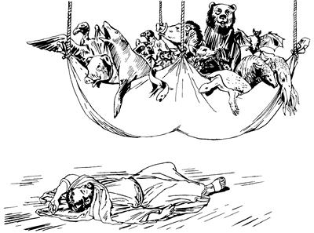

Petrusti Korneliusap haiptarekne sembe elkabo yogne Yerusalem wamekne ambatsiogha (11:1-18)
11
1 Petrus as Kaisarea wamogpa, Yesusti wepto pogsiog nimi Petrus elkabo yogne babe mog so'o Yudea wamek. Wamekpa, “Yahudi sisa kom nimi babe wene Allah yubu ka'elamangdi, Yesusag ‘Sikne’ aro seneraglamang,” alameka Yesusti wepto pogsiog nimi yogneap Yesusag “Sikne” aro seneragtop nimi mog so'o Yudea wamek nimi tanekoapti ka'ebaek. 2 Ka'ebaek aghana Yahudi nimiri senelamekne, “Allahri samenag ambatsiogha sunsunum uro nimi nengabo kon karebel talamik tanena, Allahap ma'ap tangtop nimi,” senelamek. Ane sembe, Petrus mog so'o Kaisarea laplobi agha as Yerusalem yingkiogpa, Yahudi nimi as Yerusalem wamekne Petrusag piekti, yubu lelamekti, 3 “An Yahudinge, Allahri samen arukahiogne sunsunum uro kon andinge karebaghaek aghana, Yahudi nimiri uaheng kom seneropne uaom. Sin Yahudi sisa kom nimi tanena nengabo aneko ‘Nunap Allahap ma'ap taukap,’ aro kon karep tangtop kom. Kon karep tangtop kom aghana, sindi aeag piomdi, kwaneng nikag teom. Sa'a sembe Yahudi nimiri uaheng kom seneropne nene uaom?” alamek.a4 Wene alamekpa, Petrusti, anam alniro yabioghag agha uro yabiogne ni ambarelamsiogti, 5 “Na as Yope Allahag molona lelamnori, ‘Haing uamna kwelekamna' senenag agha kemelamnoag agha kekneba nanag uao. Nari kemelamnoag agha ag sangaroba ag ingkisag-ingkisag haing tombare kerekto saog urop ag imag agha na saramag pelengel alamoa imno. 6 Pelengel alamoba, lomag kemelamnoag agha lebe aroba yan tombareri yabiropneap, lebe aroba nimiri pia urop komneap, lebe aroba mon magti yabiropneap, winang sin im toman yabiropneap imno.

7 Kemelamnoag agha imag agha nanag yubu lelamori, ‘Petrus sekmendi, wamlange tane oro yobamendi, telame,’ alamoa ka'ebano.
Petrusti, “Kemelamnoag agha ag saogha sangaroba na saramag pelengel alamoa imno,” seog. (ACT 11.5-6)
8 Wene alamoa ka'ebanori, narina, ‘A, Nani, lebe aroba taneko sembe samen Allahri, “Tululom kom,” seogpa, samenag babe nari pamdi tihi komdi, sumene babe ‘Mali,’ sembandi, tunun kom,’ seno.
9 Wene senoba, nen ik phendepne imag agha yubu ka'ebano yubu enekori lelamori, ‘Allahri yubu, “Wali nembandi, wene tululam,” alamla ane sembe, “Lebe aroba sop tane mali, nimiri tenep kom,” aro andi sap wene seheng kom,’ seo. 10 Undo unuaonge nene ik wilindi unuaori, nen ag sangaroba ni lomag wamonge imag agha kiliro tobo,” aro Petrusti Yahudi nimiag ambatsiog.
11 Petrusti nen tipto yubu ambarelamsiogti, “Kiliro toboba, wamnoag agha nimi wilindi as Kaisarea agha na wamnoag pogsioba, yaongdi, na wamno aeag ina siramag sekamong. 12 Sin sekamongba, Allah Yame Walinge nenekori na ambarelamneori, ‘ “Yahudi nimi to kom to,” semban koma, sinap nhon pululom,’ seoba, nangkabo no'opbare tane wamang nangap nhon pibo. Nu nhon as Kaisarea pibori, nimi wilindi pogsionge ponekori aeag wa'ibo. 13 Wa'iboba, Kaisarea nimi enekori nunag ambarelamsiori, ‘Allah arukna imagne malaikat nari aeag wa'al aori, nanag yubu lelamori, “As Yope nimi nhon Petrus, nen si nhon Simon wamla. ‘Simon Petrus poneko enel pukang,’ aro nimi pogsululam. 14 Pogsimenba, enero poa yaikpa, Simon Petrusti a'unag yubu ambatsilul. Yubu ambatsilenge wali uro ka'eapmundi, ‘Sik' aro seneragmunba, ‘Mali-malia ulamlomne sembe opsileag,’ aro Allahri wepto poghol aogne ponekori taulbahilul,” aro Allah arukna malaikatti nanag ambatneo,’ aro Kaisarea nimi enekori nebatneo,” aro Petrusti ambatsiog.
15 Nen tipto Petrusti Yahudi nimi mog so'o Yudea wamek nimi ambarelamsiogti, “Kaisarea nimi enekori nebatneoba, nari yubu ambarelamsinoag agha Allah Eldamne Yame Walinge neneko samenag nunag kulukulaog saog uro, sinag babe kulukulao. 16 Kulukulaoba, Yesus Nia Mangkina Salehiropneri samenag lebogne ane, ‘Yohanesti samenag nimi maghag pelengelamsiogne mag moag pelengkipsiog aghana, Allahri Eldamne Yame Walinge a'unag tarel pelengkatsilul,’ seogne nene el wamnori, wamno. 17 Nangkabo, nuri sik uro seneraglamapne, ‘ “Mog so'oag nimi taulbahimendi, saelbamsululam,” aro Allahri wepto poghol aogne Yesus,’ aro seneragoboba, Allahri Eldamne Yame Walinge nunag tatsiog. Nunag tatsiogne saog uro sin nimi taneko babe tatsio aghana nari welaro Allahag, ‘Tatsiseng kom,’ sehene?” aro Petrusti elkabo Yahudi sisa nimiag ambatsiog.
18 Ambatsiogpa, ka'ebaekpa, wana wali tahiogpa, Allah omeklamekti, “Yaghe! Allahri Yahudi sisa kom nimi babe yeplamsildi, ‘Allahri opsileag,’ aro sin Yahudi sisa kom nimiri malia ulamangne lililamsiang. Allahri yeplamsilba, malia ulamangne lililamsiangdi, Elag omeklamangba, Allahri opsulul kom. Ya'ag kamag wamukang,” alamek.
As Anthiokia nimi Allah yubu ka'ebaeka (11:19-30)
19-20 Petrusti “Yesus sembe ambarel phinun,” aro as Kaisarea anam pin komag, samenag Stefanusti Yesusag sikne aro seneraglamogne sembe Yahudi nimiri Stefanus ya'ag obek.
Stefanus obekti, Yesusag “Sikne” aro senaragtop nimi yogne babe Yahudi nimiri sare nelepto olamsiek. Olamsiekpa, Yesusag “Sikne” aro seneragtop nimi taneko nimi anabi tang-tang piek. Nimi anabi tang-tang piekagna, nhon-nhon a'el talamekti, mog so'o Fenisia palamekpa, as Antiokhia inagha tang-tang piek. Nimi orange mag alip toman heng pulingkirobag sip palamekti, mag longo kanektop mog so'o Siprus piek. Piek abeneko pere yubu walinge Yesus sembe ambarelamsiek. Yesus yubu ambarelamsiek, aghana ot Yahudi nimiag aghabog yubu walinge ambarelamsiekti, Yahudi sisa kom nimiag ambarelamsiek kom. Undo unuaekpa, yog nimina, mog so'o Siprus nimiap, mog so'o Kirene nimiapti yubu walinge Yesus sembe ka'ebaekti, as Antiokhia piekti, Yahudi nimi agha Yunani nimiri saelba uropne ul palamek nimiag yubu walinge ane tipto ambarelamsiek. Yubu walinge ambarelamsiekne, “Allahri, ‘Mog so'oag nimi taulbahimendi, saelbamsululam,’ aro wepto poghol aogne Yesus nunag yaog,” aro ambarelamsiek. 21 Nia Mangkina Salehiropne ponekori sin yeplamsiogpa, nimi maikno Yesus sembe yubu ambarelamsiek. Ambarelamsiekpa, ka'elamek nimi tanekori mali-malia ulamekne lililamsiekti, Nia Mangkina Salehiropne Yesusag “Sikne,” aro wanaag seneraglamek.
22 As Yerusalem Yesusag “Sikne” aro seneraglemek nimiri ka'elamekti, “As Antiokhia Yahudi nimi agha Yunani nimiri saelba ulamangne sunsunum uro ul palamang nimi maiknori Yesusag wana seneraglamang,” alameka ka'ebaek. Ka'ebaekti, Yahudi nimi Yesusag “Sikne” aro seneragtop nimi Yerusalem wamekne tanekori, “As Antiokhia nimiag uro yabalamlange kemel phululam,” aro nimi si Barnabas poghek. 23-24 Barnabas neneko kulomag Allah Eldamne Yame Walingeri wa'iogti, teknero ua ulamogpa, Barnabasti wanaag Yesusag “Sikne” aro to'opto seneraglamogti, walia aghabog ulamog. As Yerusalem nimiri Barnabas poghekpa, as Antiokhia piogti, kemelamsiogpa, “Allahri sin sembe wali sembamsildi, Eldamne seneragna sunsunum uro walia tarelamsil,” aro Barnabas awi sembaog. Awi sembaogti, wenelamsiogti, “Wene Yesusag wana seneraglamlomne nene wali. Wana phende seneragseng kom. ‘Yesusti ya'ag saelbamsilul,’ aro a'ero-a'ero wanaag seneraglamlulom,” aro wembahiog. Barnabasti Antiokhia nimi wana wali uro wenelamsiogpa, nimi maiknori malia ulamekne lipsiekti, Nia Mangkina Salehiropne Yesusag “Sikne” aro seneraglamek nimi maikno tangto palamog.
25 Wameka Barnabas neneko, “Saulus ebanun,” aro as Tarsus piogti, 26 Saulus ibogti, samoro as Antiokhia enero payaog. Enero payaogti, as Antiokhia Yesusag “Sikne” aro seneragtop nimiap wamekpa, Saulusap Barnabasapti Allah yubu samenag ambatsiogne pere agha Yesus sembe tibin nenero nimi maikno ambarelamsirekpa, hengkun nhon taog. Yesus yubu ka'ero ulamek nimi sembe samenag yum-yum as Antiokhia asag anea sisa Kristen aro engelamsiek.b 27 Wamekpa, Yerusalema Allahri yubu silimu tiptop nimi as Antiokhia yaek. 28 Yaek nimi taneko nhon sina Agabus Allah Yame Walingeri el pere agha yubu lelamogti, “Mog so'o Roma nimi saelbamsiek mog so'o niagc kwaneng yo nubunge waelbalul,” aro ambatsiog. Ambatsiogne nene yubu sia leropne nubunge Kaisard sina Klaudius nimi saelbamsiog li kwaneng yo neneko waelbaog. 29 Kwaneng yo neneko waelbaogpa, Yesus yubu ka'ero ulamek nimiri, “Nungkabo Yesusag ‘Sikne’ aro seneragtop nimi Yudea wamangne kwaneng yo maiknori, nuri yepsukap,” aro yubu saekag lebek. Yubu saekag lebekti, Yesus yubu ka'ero ulamek nimi ni as Antiokhia wamekneri saeag phelekto wamogha sunsunum uro, “Yudea nimi tatsinun,” aro kal ma'al poloro palilamsiek. 30 Poloro palilamsiekpa, “Sikindoyabo wenehiropnange Yudea wamangneag tarel phululom,” aro Barnabasap Saulusap pogsiekpa, pabalamdek.